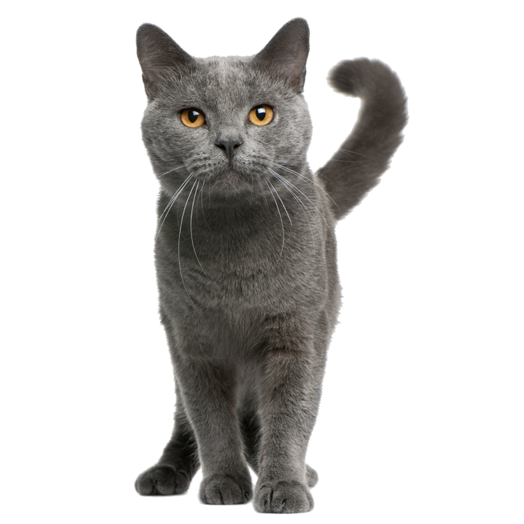

Alguns motivos para você dar essa escova de presente para o seu felino
É um momento prazeroso e relaxante para o seu gato.
A escovação é necessária porque ela remove pelos mortos.
Evita a formação de nós.
Estimula o crescimento de novos pelos e ajuda a manter a superfície da pele limpa
E ainda vai deixar a sua casa livre de pelos
